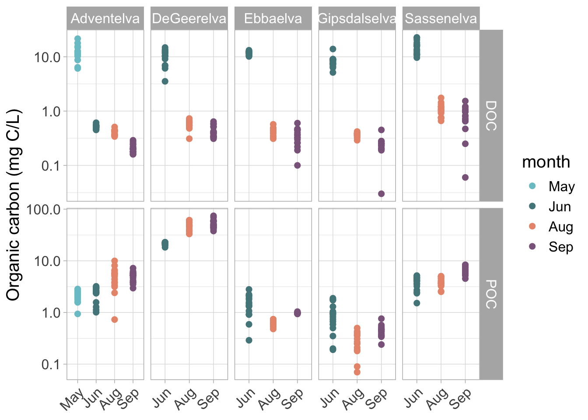

3 River water chemistry
River water chemistry data were collected in May, June, August in 2017, 2018, 2019, 2020, 2021
3.1 Solute Concentrations
3.1.1 Carbon

Tip
Shortcut for the pipe (%>%): shift-command-m
3.1.2 Nutrients

3.1.3 Contaminants

4 PCA
Call: rda(X = Envar)
Inertia Rank
Total 8
Unconstrained 8 8
Inertia is variance
Eigenvalues for unconstrained axes:
PC1 PC2 PC3 PC4 PC5 PC6 PC7 PC8
3.378 2.348 1.129 0.563 0.369 0.110 0.074 0.029 
Note
Fluxes, rather than concentration data are more relevant for evaluating implications on coastal ecosystems and the Arctic ocean. Fluxes are calculated using concentrations and discharge.